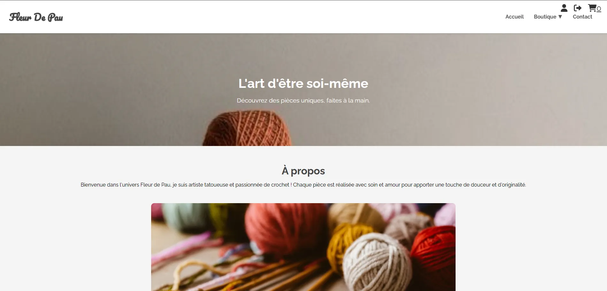
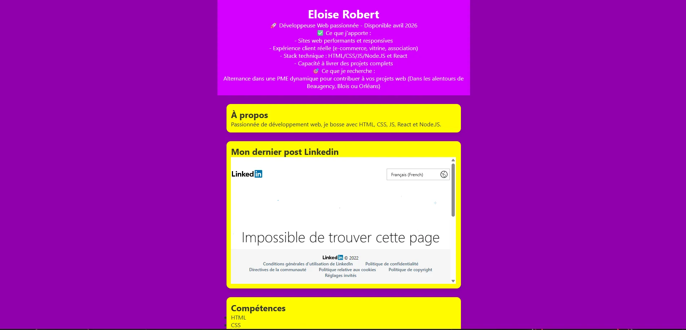
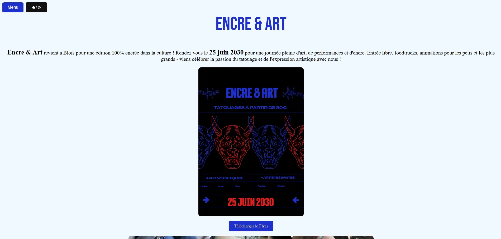

Mes Projets VS Code
Extension navigateur Raccourcis
HTML
CSS
JS
JSON

Extension de navigateur pour afficher les raccourcis clavier de l'ordinateur.
Fleur de Pau
HTML
CSS
JS
node.js
Site e-commerce fait pour une micro-entreprise dans l'unique but de m'entraîner.
CV avec React
React

Le but de ce projet était simplement d'essayer de faire quelques choses d'utiles avec React, un framwork que je n'avais jamais utilisé avant.
Encre & Art
HTML
CSS
JS

Ce projet était un devoir avant la rentrée de la formation pour ne pas perdre la main sur ce qu'on savais déjà faire.
Elec'Rénov
HTML
CSS
JS

Ce projet était un devoir avant la rentrée de la formation pour ne pas perdre la main sur ce qu'on savais déjà faire.